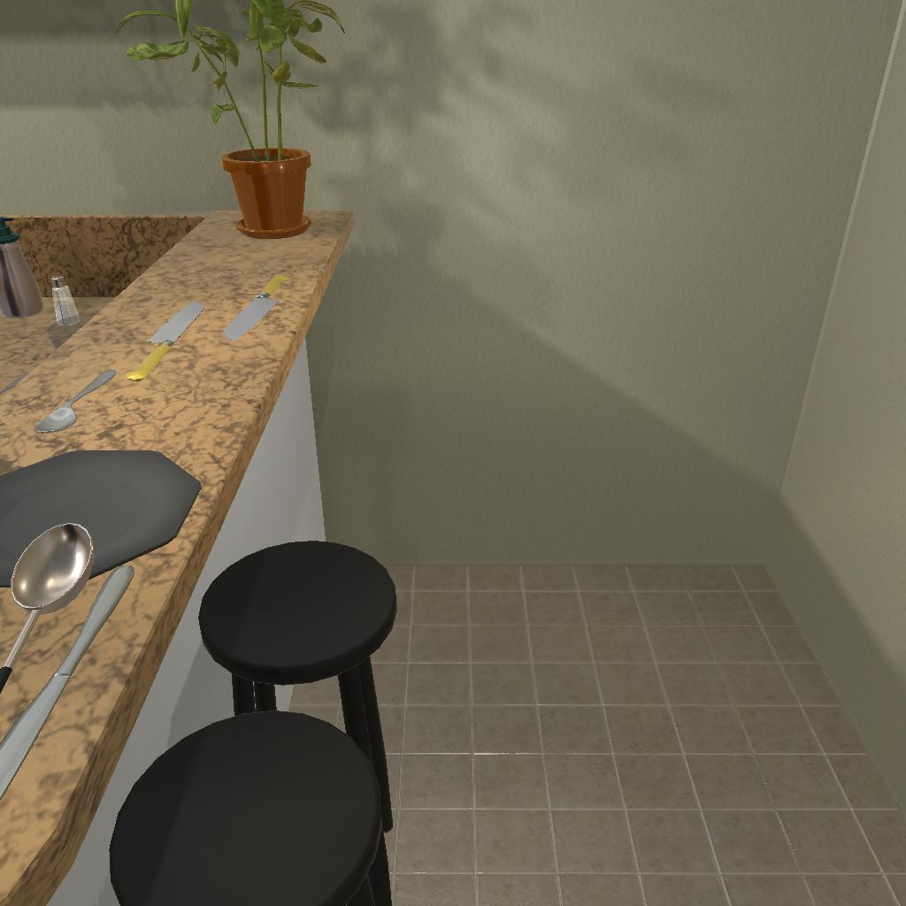

---------------------------------------------------------task: 18---------------------------------------------------------
--------------------------------------------------------------------------------------------------------------------------------------------------------------------
--------------------------------------------------------------------------------------------------------------------------------------------------------------------
Step:--------------------------------------------------------------------------1-------------------------------------------------------------------------------
----------------------------------------
VLM Prompt:
**Task**
Please perform as an embodied AI agent. Our final objective is to put a cool pot in cabinet. Below is the plan for completing the task, the current observation, alongside historical data and admissible actions for the next step. Please determine the best action for the next step!
**Plan**
Below is a detailed step-by-step plan to complete the task.
1. Find a pot.
2. Pick up the pot.
3. Find a fridge.
4. Cool the pot with the fridge.
5. Find a cabinet.
6. Place the cooled pot in the cabinet.
**Current Observation**
Displayed is an image capturing the current position of the agent.
**History Information**
Displayed are the previous observations with their corresponding actions.
State 0:
No history.
State 1:
1. Step Index in the Plan: 1
2. Objects: Coffee Machine, Sink, Items in Sink (glass, apple, onion, lettuce), Countertop
3. Action: go to countertop 3
**Admissible Actions**
(1): go to cabinet 1
(2): go to cabinet 2
(3): go to cabinet 3
(4): go to cabinet 4
(5): go to cabinet 5
(6): go to cabinet 6
(7): go to countertop 1
(8): go to coffeemachine 1
(9): go to cabinet 7
(10): go to toaster 1
(11): go to cabinet 8
(12): go to sink 1
(13): go to fridge 1
(14): go to microwave 1
(15): go to garbagecan 1
(16): go to cabinet 9
(17): go to cabinet 10
(18): go to countertop 2
(19): go to cabinet 11
(20): go to cabinet 12
(21): go to drawer 1
(22): go to drawer 2
(23): go to cabinet 13
(24): go to sinkbasin 1
(25): go to cabinet 14
(26): go to drawer 3
(27): go to stoveburner 1
(28): go to stoveburner 2
(29): go to stoveburner 3
(30): go to cabinet 15
(31): go to stoveburner 4
(32): go to cabinet 16
(33): go to cabinet 17
(34): go to cabinet 18
(35): go to cabinet 19
(36): go to cabinet 20
(37): go to shelf 1
(38): go to shelf 2
(39): go to shelf 3
(40): take plate 1 from countertop 3
(41): take houseplant 1 from countertop 3
(42): take ladle 1 from countertop 3
(43): take butterknife 1 from countertop 3
(44): take soapbottle 1 from countertop 3
(45): take knife 1 from countertop 3
(46): take knife 2 from countertop 3
(47): take spoon 1 from countertop 3
(48): take bowl 1 from countertop 3
(49): take peppershaker 1 from countertop 3
(50): take spoon 2 from countertop 3
**Analysis Guideline**
1. Analyze the history and current observation, and then determine our current step in the plan and our current place.
2. List all visible objects related to the task in the current observation, without summarizing any as "various items."
3. Analyze the objects in the current observation based on the history and the requirements for the current step, and then determine if we can complete the step with the current observation.
4. Analyze and decide on the most appropriate action to take.
5. Summarize the analysis using the following format: "Analysis: [The summarization of the analysis], The Most Appropriate Action: (i which is the integer.): [Selected action]"
**Notes**
1. We must complete each step of the plan in order and cannot skip steps when the previous ones are not finished.
2. For "Go to" actions listed as "go to xxx [n]", interpret this as there are n distinct actions available: "go to xxx 1", "go to xxx 2", ..., "go to xxx n". Select one specific action from these options instead of using "go to xxx [n]".
3. If receptacles such as drawers, cabinets, and so forth are closed in the current observation, we may try to open them.
4. Pay attention to synonyms and ensure clarity in the terms used.
5. We must determine and provide the single action which must be in the **Admissible Actions**.
6. If there is no history available, we are at the first step and the current place is "Unknown".
**Answer**
Please select the most suitable action by following the **Analysis Guideline**, keeping the above **Notes** in mind.
----------------------------------------
----------------------------------------
VLM Response:
Analysis: The current step in the plan is to pick up the pot, which is step 2. According to the history information, the previous action was going to countertop 3, and the current observation shows the agent's perspective while facing countertop 3. Visible objects related to the task in the current observation include a ladle, a knife, a butterknife, a spoon, a bowl, and a houseplant, but there is no pot visible on the countertop. Since the current observation does not show a pot, we cannot complete step 2 with the current observation. Therefore, we need to move the agent to a different location where a pot might be found. Among the admissible actions, none explicitly mention finding or taking a pot, so the most appropriate action would be to explore locations where a pot is likely to be found, such as near a stove or in a cabinet.
The Most Appropriate Action: (27): go to stoveburner 1
----------------------------------------
----------------------------------------
>>> Refine VLM Response and Get Pure Action: go to stoveburner 1
----------------------------------------
-----------------------------------------------------------------
Running time: 55.874971866607666 seconds
Total Money: 0
-----------------------------------------------------------------
-----------------------------------------------------------------
Summarization Prompt:
**Context**
Analysis: Since there is no history information, we are at the first step in the plan, which is to find a statue. The current place is unknown. In the current observation, we see a floorlamp next to an armchair with a small table that has a small object on it, which could potentially be the statue we are looking for. Since the plan requires us to find a statue first and it appears there might be one on the table next to the armchair, we should investigate this object to determine if it is the statue we need.
The Most Appropriate Action: (1): go to armchair 1
**Summary**
1. Step Index in the Plan: 1
2. Objects: Floorlamp, Armchair, Small Table, Small Object (potential statue)
3. Action: go to armchair 1
**Context**
Analysis: The current step in the plan is to pick up the pot, which is step 2. According to the history information, the previous action was going to countertop 3, and the current observation shows the agent's perspective while facing countertop 3. Visible objects related to the task in the current observation include a ladle, a knife, a butterknife, a spoon, a bowl, and a houseplant, but there is no pot visible on the countertop. Since the current observation does not show a pot, we cannot complete step 2 with the current observation. Therefore, we need to move the agent to a different location where a pot might be found. Among the admissible actions, none explicitly mention finding or taking a pot, so the most appropriate action would be to explore locations where a pot is likely to be found, such as near a stove or in a cabinet.
The Most Appropriate Action: (27): go to stoveburner 1
Please summarize the context by following above examples when providing the summary, and ensure that only the summary is included, without any extra explanation.
**Summary**
-----------------------------------------------------------------
-----------------------------------------------------------------
Summarization Response:
1. Step Index in the Plan: 2
2. Objects: Ladle, Knife, Butterknife, Spoon, Bowl, Houseplant
3. Action: go to stoveburner 1
-----------------------------------------------------------------
-----------------------------------------------------------------
Text Observation:You arrive at loc 27. On the stoveburner 1, you see a pot 1, a pot 2, a kettle 1, a soapbottle 1, a bowl 1, a stoveknob 1, a stoveknob 2, a stoveknob 3, a kettle 2, a peppershaker 1, a stoveknob 4, a tomato 1, and a spoon 2.
-----------------------------------------------------------------
UNSUCCEED